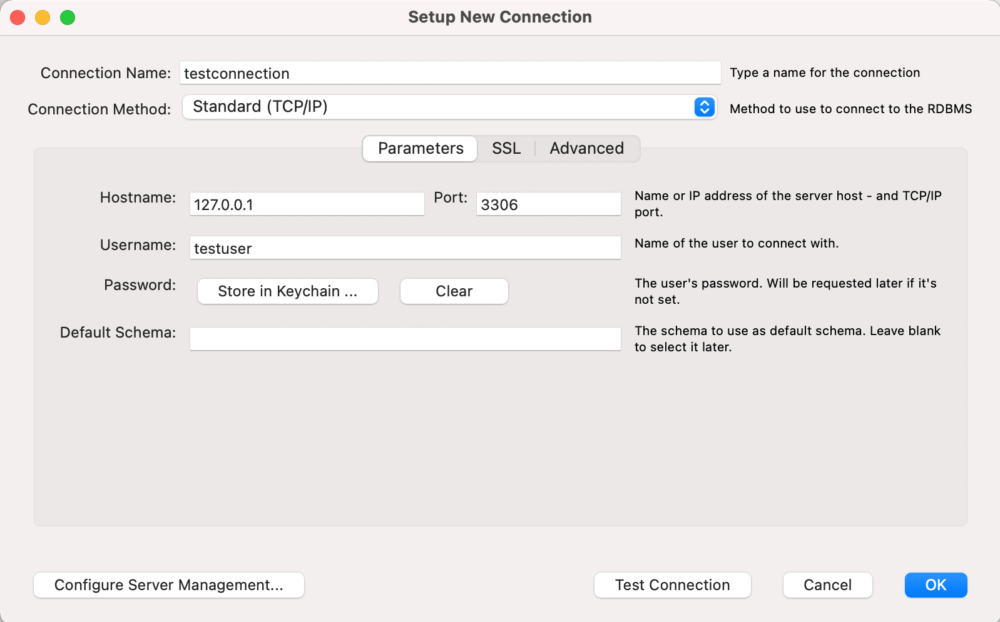
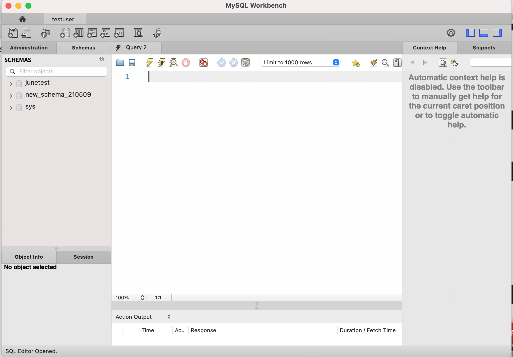
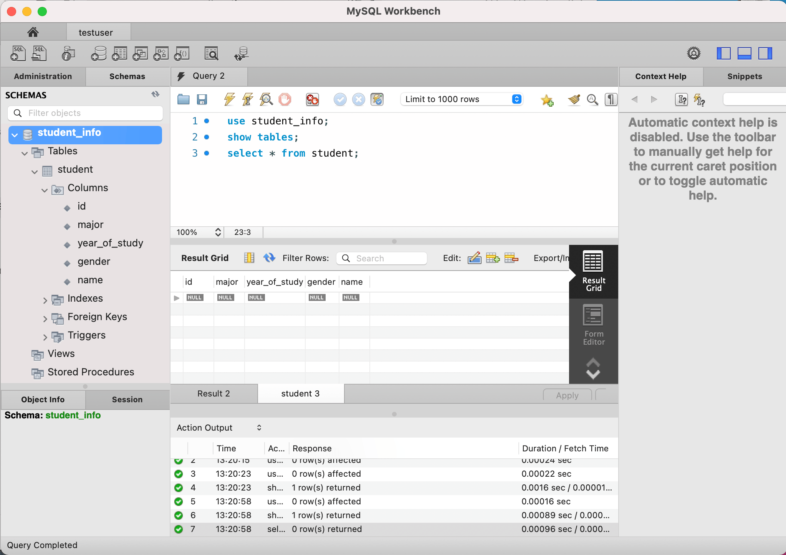
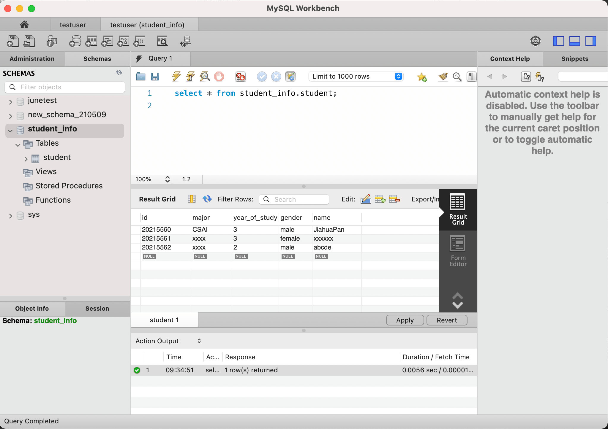
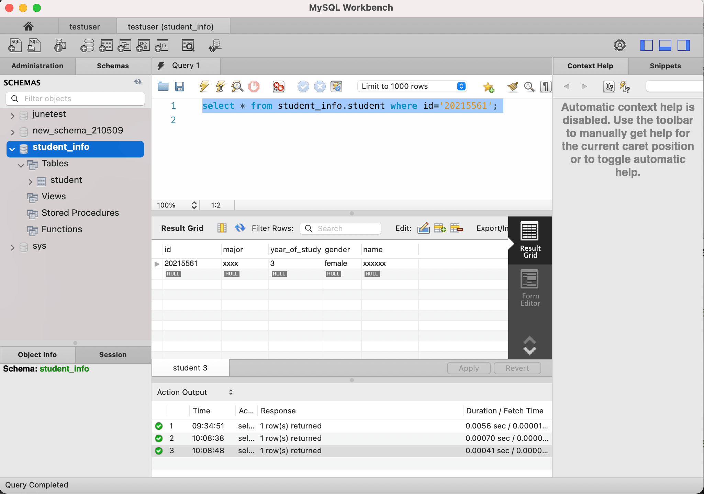

数据库_使用
数据库 + MyBatis + 增删改查
本节课学习的内容
- 使用
MySQL Workbench创建一个数据库，用来保存student_info。需要考虑每个值用哪种数据类型保存。 - 在本地打开
MySQL服务。
数据库以及管理系统的安装
MySQL
MySQL Workbench
MySQL Workbench可以让我们以可视的方式对数据库进行配置、修改等操作，可以更方便的管理用户，更加方便直观。
安装完mysql后创建新用户（之后要用到）
打开终端
Windows输入
mysql -u root -p
Mac输入
/usr/local/mysql/bin/mysql -u root -p
输入密码
进入到mysql
CREATE USER 'testuser'@'localhost' IDENTIFIED BY 'password';
创建了名为‘testuser’的用户，此账户可以用testuser登陆
这边不一定要取testuser，想取啥名字取啥名字。
一定一定要记住密码！！！
给新用户赋予权限
grant all on **.** to 'testuser'@'localhost';
此时testuser拥有了对此数据库操作的一切权限。
打开MySQL Workbench，点击MySQL connections左边的➕，创建新的连接。

点击ok后回到开始界面，点击你刚刚创建的连接，并输入testuser的密码，进入到此连接

点击上方创建新的schema，创建新的数据库空间，并命名为任意名称。
点击apply，此时，我们可以看到左边schema表中已经出现了我们刚刚新建的schema，此时，schema中还不包含任何的数据表
于是我们右键点击Create Table创建数据表，并输入数据表中所包含的项目以及其类型。
VARCHAR是可变长度的字符串。
Char是固定长度的字符串。
INT为整型。
更多数据类型可参考
点击Apply创建刚刚定义的数据表。

我们可以看到左边schema栏中已经出现了我们新建的数据表
在Query界面输入以下代码，并点击上方⚡️execute按钮
use student_info; -- 选取student_info这个schema
show tables; -- 显示当前schema中的数据表
select * from student; -- 显示student这个数据表中所有的数据

下方Result栏会返回我们每一行执行命令的Result Grid，我们可以通过action output区域判断我们命令是否被正确的执行。
因为当前我们没有向student表中加入任何记录，所以我们查询到一个全空的表。
我们可以选择直接在result grid中输入你想要加入的记录，点击apply来添加记录
也可以选择在Query中输入insert命令来增加记录
INSERT INTO student_info.student (id, major, year_of_study, gender, name) VALUES ('20215560', 'CS', '3', 'male', 'JiahuaPan');
点击⚡️运行后，再输入以下命令显示student表中内容可以发现，新的记录已经被添加到该表了。
如果要修改表内的信息的话，例如将id为20215560的记录的major由CS改为CSAI，在query中输入upadte命令。
UPDATE student_info.student SET major = 'CSAI' WHERE (id = '20215560');
可以看到修改成功。
大家自己尝试添加修改几项。

要对特定符合某个条件的记录进行搜索的话，我们会使用 where 来添加限制条件。例如
select * from student_info.student where id='20215561';
可以搜索出该表中id为20215560的项。
如果要进行删除记录操作的话，例如删除最后一条记录。
**DELETE FROM student_info.student WHERE (id = '20215562');**

此时我们可以看到最后一条记录已经被删除掉了。
大家可以自己尝试一下增删改查的用法